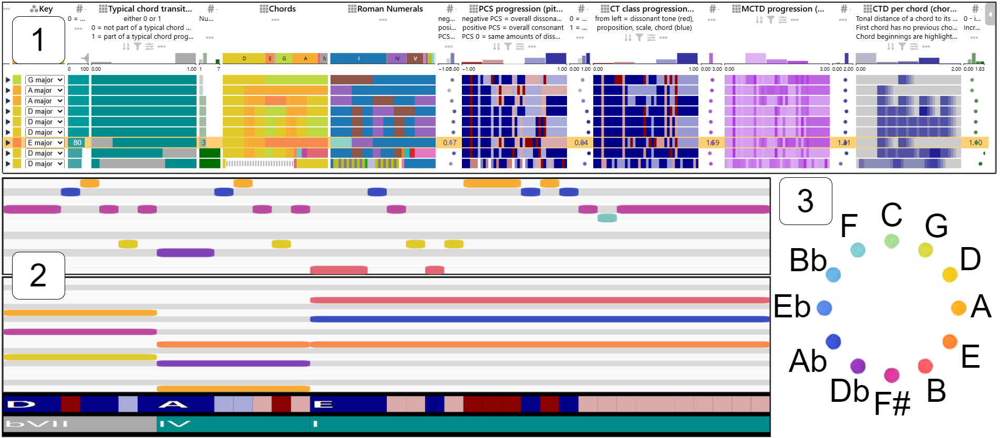

HarmonAI: A Visual Interface for AI-assisted Music Harmonization

(opens in new tab)
Venue. VINCI (2026)
Materials.
PDF(opens in new tab)
Abstract. We present HarmonAI, a visual and analytical approach for AI-assisted harmonization in music composition. HarmonAI combines manual music composition with generative AI while keeping control in the user's hands, who curates and selects from AI-generated suggestions. With a two-step approach, we first generate multiple harmonization candidates for a given melody using a generative model, producing a set of increasingly complex music samples. In the second step, we provide a structured, ranked tabular overview of the set and visualize musical characteristics to explore and investigate samples and identify interesting harmonizations. We assume that using rankings and visualizations based on carefully selected metrics, rather than sequentially listening to all suggestions, will help to identify interesting samples from a large set quickly. We discuss our metric selection and visual design, and illustrate HarmonAI's utility in a usage scenario.
Link to this page: